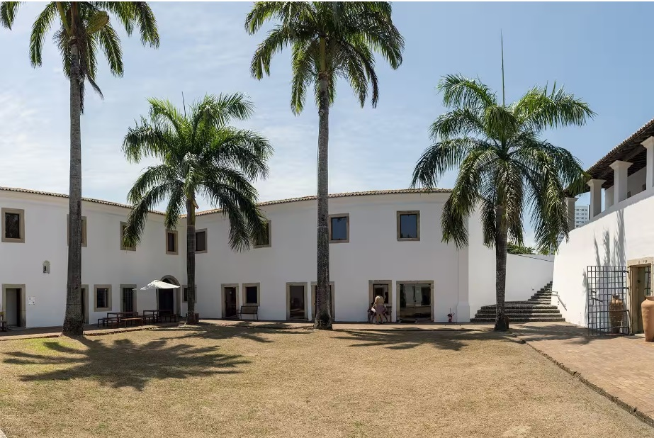
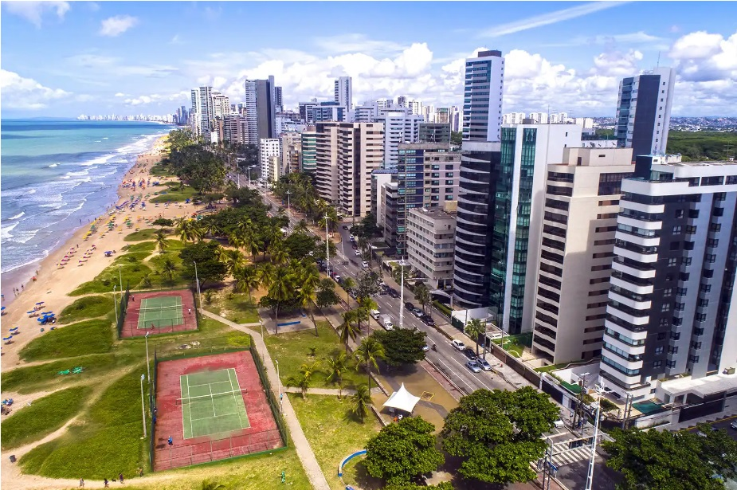

Uma das igrejas mais bonitas da capital, a Capela Dourada guarda muito
da ostentação e da riqueza do Brasil colonial, com muitos detalhes em
ouro, madeiras trabalhadas e pinturas sacras. Na verdade, a capela fica
dentro do Convento e da Igreja de Santo Antônio, onde também está o
Museu de Arte Sacra. Perto dali, não deixe de conhecer o Convento de São
Francisco, que compõe um belo conjunto arquitetônico com a Igreja de
Nossa Senhora das Neves, a Capela de Santana e a Capela de São Roque.
Capela Dourada

O Forte das Cinco Pontas representa a última construção dos holandeses
na cidade, com o objetivo de protegê-la de possíveis ataques e também
para auxiliar na rede de distribuição de água. É um misto de cultura e
história em um único roteiro. No lugar, ainda funciona o Museu da
Cidade, com exposições temporárias que abordam a história da capital
pernambucana. Além disso, é muito comum anunciarem programações
temporárias com eventos e exposições aleatórias. Logo, uma dica antes de
visitar: busque informações atualizadas no site oficial do museu.
Capela Dourada

A Praia de Boa Viagem é a mais famosa da cidade, sempre muito
movimentada e frequentada por locais e turistas. O lugar oferece uma boa
infraestrutura e conta com uma extensa faixa de areia, bem convidativa
para a prática de esportes. Por ter arrecifes, o mar aqui costuma ser
calmo e com poucas ondas. Uma continuação da Praia de Boa Viagem, a
Praia do Pina também é bastante frequentada por locais. Com águas
mornas, verdes e muitos coqueiros ao redor, Pina é interessante para
fugir do burburinho de Boa Viagem.